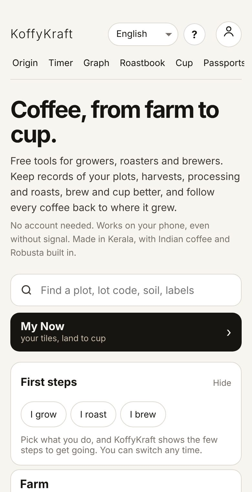
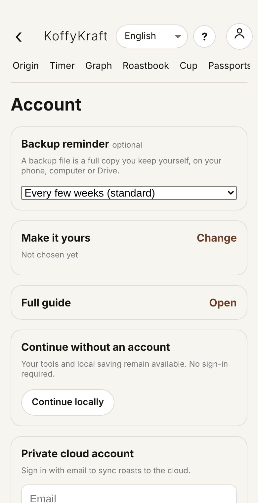
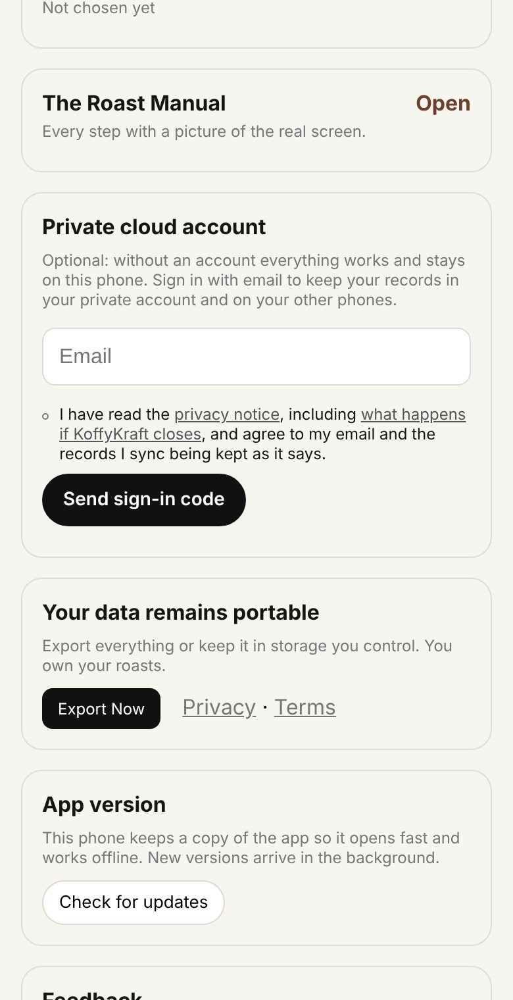
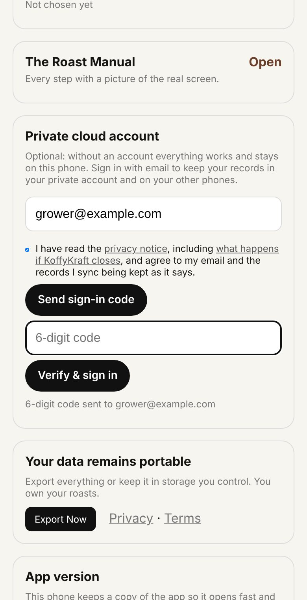
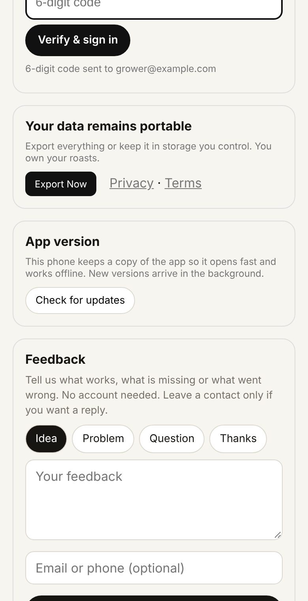

Step 1 · Open Roast for the first time
Open Chrome (Android) or Safari (iPhone) and go to roast.koffykraft.coffee. The first time, Roast opens on Home with the words Coffee, from farm to cup.

Also inGetting set up
Start · Before the first record
Open Roast, keep it on your home screen like any app, choose whether to have an account, and know what happens with no signal.
Step 1 · Open Roast for the first time
Open Chrome (Android) or Safari (iPhone) and go to roast.koffykraft.coffee. The first time, Roast opens on Home with the words Coffee, from farm to cup.

Also inGetting set up
Step 2 · Put Roast on my home screen
Put it on your home screen. On an iPhone: the Share button at the bottom of Safari, then Add to Home Screen. On Android: the ⋮ menu at the top right of Chrome, then Add to home screen. These menus belong to the phone's browser, so their words can differ a little.
Also inGetting set up
Step 3
Open Roast from the new icon. It now opens on its own, without the browser's address bar.
Also inGetting set up
Tip
Open it once while you have a signal. That is when the phone keeps its copy of the app. After that it opens even in airplane mode.
What it is · Decide whether I need an account
Everything works without an account. The difference is where the records live.
| No account | Signed in | |
|---|---|---|
| Where records live | Only on this phone | On this phone and in your private account |
| Another phone sees them | No | Yes, after signing in there with the same email |
| If the phone is lost or reset | Gone, unless you saved a backup file | Still in your account |
| Cost | Nothing | Nothing |
Step 4
To carry on without one, do nothing: just start using the app. The account is there when you want it: tap the round person button at the top right, then Account and sign-in.

Also inGetting set up
Step 5 · Sign in with my email
To sign in: on the Account page, find Private cloud account and type your email in the Email box. There is no password; each time, Roast emails you a 6-digit code.

Step 6
Read the privacy notice (the link in the sentence beside the tick box). It says what is kept, for how long, and what happens to your records if KoffyKraft closes. If you agree, tick the box and tap Send sign-in code. You will see 6-digit code sent to your email, and a box for the code.

Step 7
Find the sign-in email, type the 6 digits in the 6-digit code box, and tap Verify & sign in. The page reloads and you are signed in. Records already on this phone go to your account, and records from your other phones come in.
Also inGetting set up
Watch out
Without the tick, nothing is sent and the page asks you to read and tick the privacy notice first. After a code is sent, the button rests for 30 seconds before it sends another. Check your spam folder before tapping again.
Also inGetting set up
Tip
Staff who enter records for you can sign in on their own phone with the same account email. Each record still shows who entered it.
Also inRecords you can trust
What it is · Work where there is no signal
Roast is built for hill farms, drying yards and store rooms where the signal comes and goes.

Also inNothing gets lost
Watch out
A few things ask a server and need the internet: signing in, the land check on a plot, and fetching weather. The app says so when it needs a connection; nothing you typed is lost.
Watch out · Keep a backup of my records
Without an account, records live only in this phone's browser. Clearing the browser's data, or removing the app, removes them too. When a backup is due, Now shows a Keep a copy card: after 14 days when records are only on this phone, after 30 when signed in. Backup reminder on Account changes this to weekly, after each save, or off.
Also inNothing gets lost
Why it matters
Working on the phone first means a bad signal never stops a harvest being written down. An account or a backup file means a lost phone never takes a season with it.